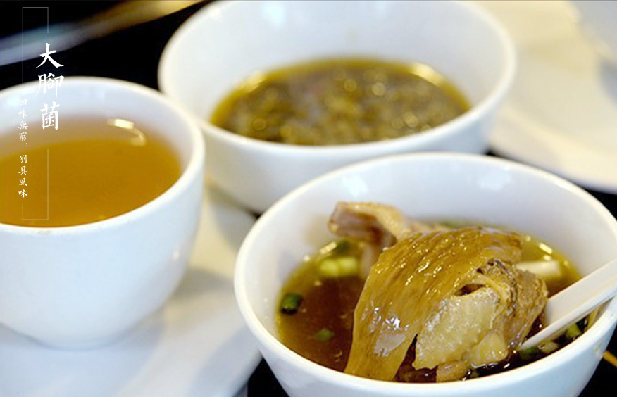

Feet - feet bacteria bacterium is source with beautiful scenery in the wuling mountain area, no pollution soil, clean water, pollution-free natural bacteria grown wild bigfoot, by the traditional craft refined but become, According to the composition analysis, contain protein, adipose, a variety of amino acid, the amino acid that the human body must have 8 kinds. It is also rich in vitamin B1, B2, C and PP. It has a strong body, The benefits of gastrointestinal, pain, and phlegm. Precious bigfoot fungus, the fragrance is unique and full-bodied. Cooked with sasquatch, the taste is sweet and fragrant, and the taste is delicious.
The wulingshan bigossin There is a reputation as the "king of fungi". In China, it is mainly distributed in sichuan, chongqing, gansu, yunnan, guizhou and Tibet. Wild bigfoot grows in the mountains of pengshui and the border of guizhou Only in June, July and August, a year three months after the rain the sun will grow under special conditions, after two or three hours will wither, cannot be cultivated artificially, so very precious. Is a pure natural rare senior food nutrition, it not only contains rich vegetable fat, protein, carbohydrates, fiber, as well as a variety of vitamins, and more beneficial to human body health, beauty. It has the function of clearing the heat, the pursuit of the wind and the cold and the blood. Especially for gynecological diseases. It is a soup with pure farm and chicken stew, which is delicious and oily and not greasy, and it is a paradise nourishing soup for all ages. Common cooking methods are cooked, roasted, blown, Fried, Fried, steamed, mixed, etc. Bigfoot bacteria are usually made of fresh, fresh and dry products. The making of dishes is good in fresh taste.
The wulingshan bigossin There is a reputation as the "king of fungi". In China, it is mainly distributed in sichuan, chongqing, gansu, yunnan, guizhou and Tibet. Wild bigfoot grows in the mountains of pengshui and the border of guizhou Only in June, July and August, a year three months after the rain the sun will grow under special conditions, after two or three hours will wither, cannot be cultivated artificially, so very precious. Is a pure natural rare senior food nutrition, it not only contains rich vegetable fat, protein, carbohydrates, fiber, as well as a variety of vitamins, and more beneficial to human body health, beauty. It has the function of clearing the heat, the pursuit of the wind and the cold and the blood. Especially for gynecological diseases. It is a soup with pure farm and chicken stew, which is delicious and oily and not greasy, and it is a paradise nourishing soup for all ages. Common cooking methods are cooked, roasted, blown, Fried, Fried, steamed, mixed, etc. Bigfoot bacteria are usually made of fresh, fresh and dry products. The making of dishes is good in fresh taste.
